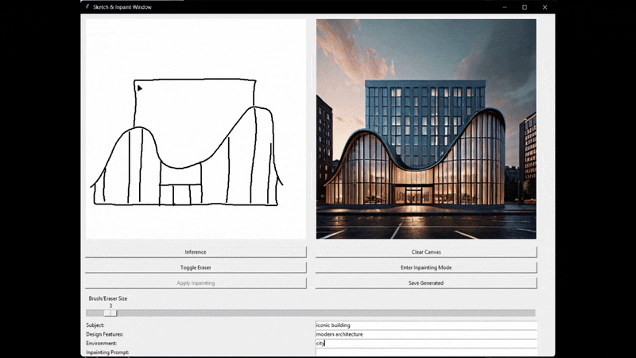

StableDiffusion_Interactive_Sketch_to_Image_Tool
Overview
This application leverages the Diffusers library and multiple Stable Diffusion XL pipelines to offer an interactive interface for generating and editing images. By integrating ControlNet, the user’s sketch is respected as a guidance map, ensuring the final output aligns with the original drawing. In inpainting mode, users can paint a mask directly on the generated result to refine or alter specific details in the image.
Example applications:
- Quick concept art generation
- Generating variations of a manually drawn design
- Editing or refining existing AI-generated images
Key technologies:
- Python 3.9+
- Torch (CUDA-enabled)
- Hugging Face Diffusers
- Stable Diffusion XL (with ControlNet + Inpainting models)
- Tkinter for GUI
- Pillow (PIL) for image manipulation

Features
-
Sketch to Image
- Draw simple sketches or outlines on a white canvas.
- Real-time inference triggers to generate preview images using SDXL + ControlNet.
- Customizable prompts (subject, style, environment, etc.).
-
Inpainting Mode
- Switch to inpainting mode to refine or modify parts of the generated image.
- Paint a mask (in red) onto areas you want to replace.
- Click “Apply Inpainting” to let the SDXL inpainting pipeline fill the masked areas.
-
Undo & Eraser
- Undo your last stroke (in regular sketch mode).
- Toggle eraser vs. brush for quick corrections.
-
Prompt-based
- Simple text input fields to craft unique prompts.
- Negative prompts to avoid undesired content.
-
Saving Results
- Save your generated images in multiple formats (JPEG, PNG, etc.).
Technical Details
| Component | Details |
|---|---|
| Stable Diffusion XL Pipeline |
|
| ControlNet |
|
| Inpainting |
|
| GUI (Tkinter) |
|
| Performance |
|
Demo Video
Watch the demo video to see how it works.